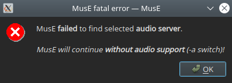

Getting up and running
Quick startup
…for impatient people
Install MusE from the repository of your chosen distribution. To get decent performance start http://jackaudio.org/Jack with the following command in a terminal:
$> jackd -d alsa -d hw:0 -p 256
Or, if you prefer, use the launcher utility http://qjackctl.sourceforge.net/QJackCtl to get some help starting Jack. After this, start MusE from the menu or fire up another terminal and type muse4.
If this didn’t work out read on for the slightly more complete route for getting things started.
…for REALLY impatient people
MusE now supports PulseAudio, in this scenario you don’t even need Jack. For realtime playing, the latency will likely be an issue though but there are use cases, for instance mixing where it works perfectly.
Type muse4 -t to start MusE with the PulseAudio backend.
Installation from binaries
There are several ways to install MusE depending on your situation. The most convenient way is to install a prepackaged version from your chosen distribution. The drawback of this is that it may not be the most recent version.
AppImage
Starting with version 4.0, MusE is available as a distro-independent AppImage, both for the (pre-)releases and the current development version (master). All you have to do is download the desired AppImage and make the downloaded file executable (some desktops offer to do that for you and also create a start menu entry automatically).
Installation from source
Building MusE from source is not hard, there are a number of prerequisites that must be met but the actual building should be painless (ha, famous last words).
Have a look at the detailed instructions in the README file in the package file, or at: https://github.com/muse-sequencer/muse
Hardware
MusE on the Linux platform supports midi through ALSA and jack-midi and audio through Jack and PulseAudio. For information on what hardware is generally supported there are some convenient places to check:
- Alsa soundcard matrix at http://www.alsa-project.org/main/index.php/Matrix:Main
- http://FFADO.org for firewire devices.
Also, as is often a very good approach for Linux and open source, the various forums available on the internet often contain good information. Chances are someone has already tried your configuration and/or had your specific problem and the solution is already written down.
These days (2021) most soundcards are USB based and many work out of the box. But please do not take this as gospel if you are in the market to buy a sound card. Please research it before buying.
Audio preconditions
In the standard case MusE expects to find and connect to the Jack audio server http://jackaudio.org. Make sure Jack is installed (if MusE was installed with a distribution-package Jack will very likely already be installed). For Jack to run with best performance your system should be sufficiently tuned to allow it to run with realtime capabilities. The realtime configuration of the operating system roughly consists of two parts:
- By default on most distros only the superuser lets applications setup realtime capabilities. Please see the APPENDIX for setting up realtime.
- Maximizing performance. A standard linux installation may not be able to reach the performance required by a power user. This requires exchanging the linux kernel for a so called lowlatency or realtime kernel, this is also covered by the realtime APPENDIX.
Launching
After installation, the binary muse4 is installed on your computer. If MusE was installed from a distribution repository the binary may have a different name depending on the distribution policies. Most distributions do however install a menu entry so MusE should be conveniently available from there.
Running MusE
Find MusE in the menu or open a terminal and enter muse4.
$> muse4
A splash screen should pop up followed by the main application window and you are off!
If an error like the screenshot below pops up the Jack audio server is either not running or started as a different user than what you are trying to start MusE as.

Running with PulseAudio backend
MusE can now conveniently be started without Jack, either by changing audio device configuration in MusE’s settings (and restarting) or by starting MusE with the argument -t, like this:
$> muse4 -t
Do note however that running with PulseAudio might not be good enough if you want to record in realtime and listening to what you are doing. The latency of PulseAudio (though not bad) is probably a bit much for playing along. The RTaudio/PulseAudio driver does not support latency reporting so no latency correction is possible (like with the Jack driver). For editing and mixing it is however perfectly usable.
Running Midi-only
MusE can also be started in Midi-only mode, where MusE does not have any external dependencies apart from ALSA midi. In this case start MusE from a terminal:
$> muse4 -a
This is a remnant of old times, in general there should be very little reason to disable audio in this way, but the option is there if someone finds this to be useful.
ALSA MIDI and jack-midi
MusE supports connecting to midi devices directly from ALSA or as exposed by jack. If Jack is running, by default MusE will not use ALSA devices, preferring jack-midi instead. To force ALSA devices to be used as well as jack-midi, start MusE with the -A option:
$> muse4 -A.
Note (2021), though the above is still more or less true, these days it is possible to turn on/off ALSA devices dynamically in the device configuration.
There is actually a case that could be made that ALSA midi is a better option due to potential latency issues with jack-midi. This is not a universal truth but in MusE’s case it is still debated as true.
Command line parameters
$> muse4 -h
Will list all command line parameters of MusE. Especially when trying to isolate some issue it may be good to play with the various parameters for limiting plugin loading or more verbose debug trace.